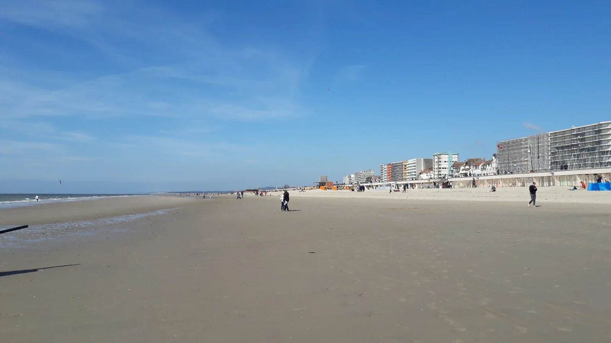

Le Touquet — Paris-Plage
Pas-de-Calais, France · kitesurf, baignade, paddle, bodyboard

Immense plage de sable fin, mythique pour le kitesurf et le char à voile : eau peu profonde, idéale pour débuter par vent thermique.
- Lieu
- Pas-de-Calais, France
- Niveau
- Débutant
- Activités
- kitesurf, baignade, paddle, bodyboard
- Type d'eau
- Mer / océan
- Coordonnées
- 50.52, 1.58 (position approximative du secteur)
Dangers à connaître
- Marée qui monte vite sur l'estran plat.
- Zone partagée avec chars à voile et baigneurs.
Le conseil d'Ocean Buddy
Reste près du bord à marée montante, elle remonte très vite.
Ouvrir dans Ocean Buddy Télécharger sur l'App Store
Source : Description historique Ocean Buddy · vérification externe en attente.